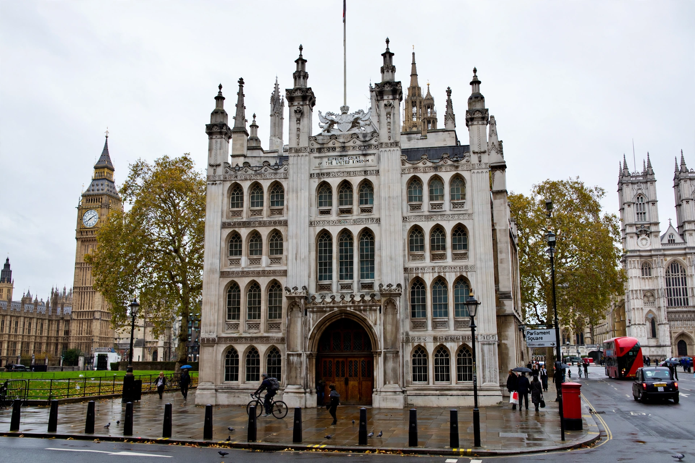

Middlesex Guildhall

| Location | Parliament Square, Westminster, London |
|---|---|
| Built | 1906–1913 |
| Architect | James Gibson |
| Architectural style | Neo-Gothic |
| Current use | Supreme Court of the United Kingdom; Judicial Committee of the Privy Council |
| Listing | Grade II* |
The Middlesex Guildhall is a historic building in Parliament Square in the City of Westminster, London. Built between 1906 and 1913 as the headquarters of Middlesex County Council and the county's principal court building, it has been, since October 2009, the home of the Supreme Court of the United Kingdom and the Judicial Committee of the Privy Council.
History
The site on the west side of Parliament Square, opposite the Palace of Westminster, had long been associated with justice: it was once occupied by the belfry of Westminster Abbey and later by a market and sessions house. Earlier guildhalls for Middlesex stood on the site from the 18th century. The present building, designed by James Gibson (with Skipwith and Gordon) in a neo-Gothic style faced in Portland stone, was constructed after Middlesex County Council outgrew its previous premises; its rich carving, including figures by Henry Charles Fehr and a frieze depicting historical scenes, was intended to rival the neighbouring Palace of Westminster. The guildhall served as the council's administrative centre and as a Crown Court — it was notably the venue for a series of high-profile trials — until Middlesex County Council was abolished in 1965, after which the building continued in use as a Crown Court centre with seven courtrooms until 2007.
Conversion into the Supreme Court
The Constitutional Reform Act 2005 created a new Supreme Court for the United Kingdom, separating the judicial functions of the House of Lords — whose Law Lords had sat in the Palace of Westminster — from the legislature. The Middlesex Guildhall was selected as the court's home, and architects Feilden and Mawson carried out a major renovation (2007–2009) which restored the building's historic interiors, created three courtrooms, a library and a visitor exhibition, and added contemporary additions including a glass extension and the court's emblem, designed to combine the floral symbols of the four nations of the United Kingdom. The court opened in the building on 1 October 2009. In addition to the Supreme Court, the building houses the Judicial Committee of the Privy Council, the final court of appeal for many Commonwealth jurisdictions, Crown dependencies and British Overseas Territories. The building is Grade II* listed.